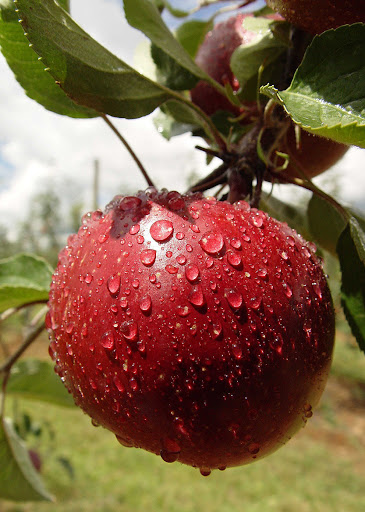

Produzir maçãs no campo envolve várias etapas fundamentais:
Preparação do Solo e Plantio: Escolha de áreas com boa drenagem e exposição solar. Preparo do solo sílico-argiloso ou argilo-silicoso, profundo e rico em matéria orgânica. Plantio das mudas de maçã, escolhendo variedades adequadas ao clima local.
Cuidados durante o Crescimento: Irrigação adequada, controle de pragas e doenças (como oídio e sarna), adubação regular e poda anual para promover o desenvolvimento saudável das árvores.
Colheita e Pós-Colheita: Colheita das maçãs quando maduras, classificação por tamanho e qualidade, e armazenamento em câmaras frias para preservação da qualidade até a comercialização.
Gestão Sustentável: Monitoramento contínuo das condições das árvores e do solo, adoção de práticas agrícolas sustentáveis para proteção ambiental e conservação dos recursos naturais.
Essas etapas garantem uma produção eficiente e de qualidade de maçãs, contribuindo para satisfazer a demanda no mercado local ou regional.

Curiosidades sobre Maçãs
A maçã é o fruto da macieira, árvore da família Rosaceae, com tronco de casca parda, lisa e copa arredondada que chega a 10 m de altura. A fruta mais cultivada do mundo é originária da Ásia e da Europa. Existem mais de 2,5 mil espécies de maçã. As variedades mais cultivadas são: gala, golden delicious e fuji.
Comer maçã com ou sem casca? Segundo os nutrólogos, jogar fora a casca da maçã é, definitivamente, um crime contra a sua saúde. É nessa parte da fruta, por exemplo, que se concentram grande parte das vitaminas, antioxidantes e substâncias anticâncer.Os flavonoides também auxiliam em doenças cardiovasculares. Além disso, a maçã possui componentes que ajudam na prevenção do câncer de cólon, de próstata e de mama. Saciedade: As maçãs são muito recomendadas aos que querem começar uma dieta. Isso porque a fruta possui fibras que ajudam a dar a sensação de saciedade.